最近写公众号，评论区和私信里出现频率最高的问题不是"这个工作流怎么搭"，而是——
从山东到北京到江西，天南海北的朋友都在问同一个问题。
说实话，看到这么多人感兴趣，我就知道这篇文章该写了。
这些插图是我自己封装的一个 Skill 生成的。跑在 Hermes Agent 里，底层调的是香蕉模型。你要是更习惯用 GPT Image 2 或者别的，换掉 API 就行，后面会说怎么换。
你把写好的文章整篇丢给它，它会自己分析哪些段落值得配图，挑出 4-5 个位置，然后直接生成对应的概念图、流程图、对比图或者架构图。
支持四种视觉风格：手绘笔记本风、专业信息图风、科技商务风、温暖手绘卡片风。你选一种，整篇文章的图风格统一。
其中温暖手绘卡片风比较特别，图里会出现一个卡通小人辅助叙事。我用的是自己的 IP 形象，你 fork 之后可以换成你自己的，Skill 里留了替换入口。
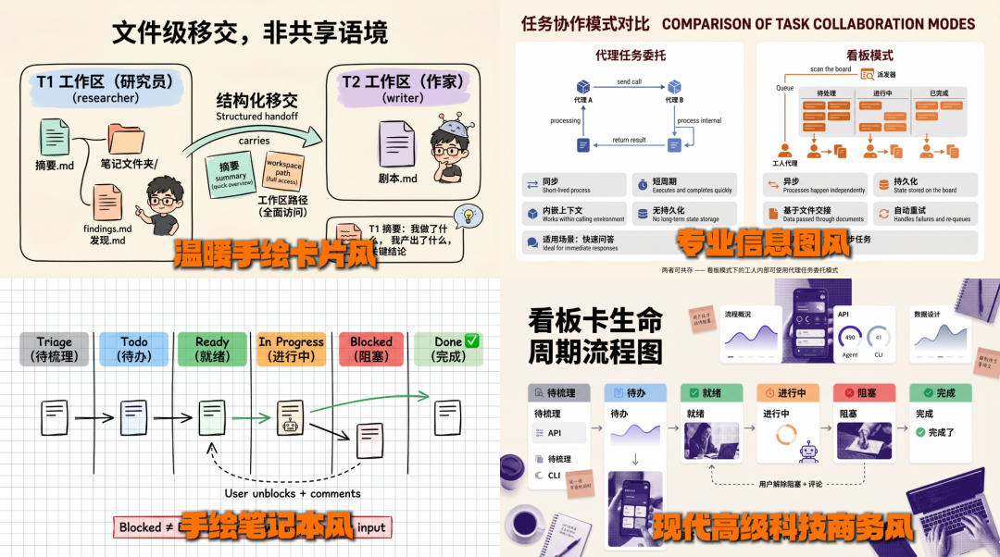
既然这么多人想要。
今天直接开源了，算是给粉丝的一波福利。
Skill 名字叫 linyuebanzi-inline-diagram。用法就是在 Hermes 里输入 /linyuebanzi-inline-diagram，把文章内容给它，它会先列出建议的插图位置和每张图要表达什么，你确认之后才开始生图。
顺便说一下，我用的生图 API 是 MuleRun 的 Nano Banana 2，比较小众。生图这块我单独封装了一个 linyuebanzi-image-gen Skill，文章里的首图、分享横幅、插图其实都是调的这个 Skill。你要是习惯用别的生图服务，让 AI 帮你把这个 Skill 里的 API 换掉就行，改动量很小。
其实说实话，linyuebanzi-inline-diagram 这个 Skill 真正有含量的不是生图，而是生成提示词那块逻辑——怎么分析文章、怎么挑位置、怎么写出结构化的图表描述。提示词生成完会存成 .txt 文件，你甚至可以拿着这些提示词直接丢到任何你顺手的平台去出图，一样能用。
但今天我真正想聊的，不是这一个 Skill。
七条斜杠命令，每篇文章都得来一遍
我现在写一篇公众号文章的流程是这样的：
七条命令。每次写文章，挨个敲一遍。
你说它好不好用？确实好用，每个 Skill 都是我自己打磨的，各管各的事情，效果都不错。
但每次都要重复这套流程，说实话，烦。
而且这里面有一个更深层的问题。
四个 Skill 里藏着同一段重复代码
我手上有好几个生图的 Skill——cover-hero、inline-diagram、cover-banner、share-card，它们的核心逻辑里都嵌了一段类似的生图脚本：调同一个 API，处理同样的图片格式，做同样的错误处理。
当初每个 Skill 我都是单独开发的，图方便就直接把生图脚本复制粘贴进去了。跑倒是都能跑，但哪天我要换一个生图模型呢？比如突然想从当前的 API 换到 GPT Image 2，得挨个打开四个 Skill，改四份几乎一样的代码。
改漏一个？恭喜你，bug 就来了。
标准做法是把生图脚本抽出来做成一个独立的 Skill，其他 Skill 去调用它。每个 Skill 只管自己的事情——封面构图、插图排版、卡片布局——生图交给统一的底层模块。
Skill 拆得越细、耦合越低，组合的灵活性就越高。今天用 Nano Banana 生图，明天想换 GPT-Image-2，只改一个 Skill，其他几个完全不用动。插图 Skill 的提示词逻辑有优化，也不会影响生图模块。各改各的，互不牵扯。
但光拆还不够。Skill 拆细了，调用的时候就得一个一个手动加载。
Hermes 新功能：Skill Bundles
Hermes 最新版本出了一个功能，叫 Skill Bundles。
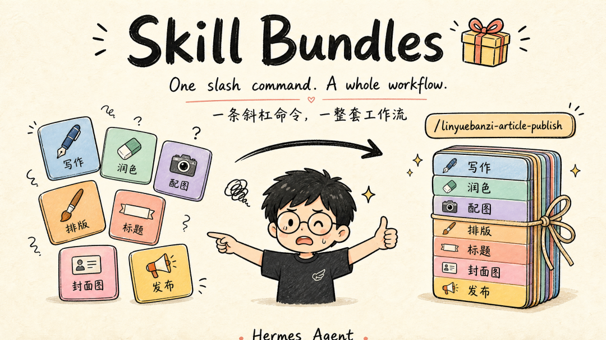
原理简单到有点离谱。
一个 YAML 文件，列出你想一起加载的 Skill 名字，放到 ~/.hermes/skill-bundles/ 目录下。
然后输入 /<bundle名字>，所有 Skill 一次性加载进来。
就这样。
我的公众号写作 Bundle 长这样：
name: linyuebanzi-article-publish
description: 林月半子公众号文章全流程技能包——文稿终审、配图、标题、分发一站式搞定。输入/linyuebanzi-article-publish一次性加载7个技能。
skills:
- linyuebanzi-humanizer-zh
- linyuebanzi-headline
- linyuebanzi-inline-diagram
- linyuebanzi-cover-hero
- linyuebanzi-cover-banner
- linyuebanzi-share-card
- linyuebanzi-share-copy
instruction: |
你正在执行林月半子（LQ）的公众号文章发布流水线。
用户会提供一篇已写好的文章初稿，按下面 5 个阶段依次执行。
每个阶段完成后必须停下来向用户确认，绝对不要一口气跑完。
Phase 1 — 文稿终审（linyuebanzi-humanizer-zh）
交付：去 AI 味后的终稿
Phase 2 — 标题与摘要（linyuebanzi-headline）
交付：主推标题 x1 + 备选标题 x2 + 配套摘要 x1
Phase 3 — 正文插图（linyuebanzi-inline-diagram）
交付：4-5 张插图 + 插入位置清单
Phase 4 — 文章首图（linyuebanzi-cover-hero）
交付：1 张 16:9 文章首图
Phase 5 — 分享素材包（cover-banner + share-card + share-copy）
交付：横幅图 x1 + 方块图 x1 + 分发文案 8 条
阶段 1-4 严格串行，阶段 5 内部三个子任务可并行。就这么点东西。学习成本几乎为零——就是把"每次手动加载的 Skill 列表"存成了一个 YAML 文件。
创建 Bundle
怎么创建这个 Bundle？两种方式
第一种：命令行一行搞定。
hermes bundles create linyuebanzi-article-publish \
--skill linyuebanzi-humanizer-zh \
--skill linyuebanzi-headline \
--skill linyuebanzi-inline-diagram \
--skill linyuebanzi-cover-hero \
--skill linyuebanzi-cover-banner \
--skill linyuebanzi-share-card \
--skill linyuebanzi-share-copy \
-d "林月半子公众号文章发布流水线" \
-i "你正在执行林月半子（LQ）的公众号文章发布流水线。"跑完之后 YAML 文件就自动生成在 ~/.hermes/skill-bundles/ 目录下了。
第二种更有意思：直接跟 Hermes 对话，让它帮你规划。
你可能自己都不确定该把哪些 Skill 组合在一起，每个阶段该交付什么。没关系，让 Agent 帮你想。
我就是这么干的，直接问 Hermes
我的公众号文章初稿已经写好了，建议我应该将哪些技能组合成一个技能包。技能包里我需要清楚每个阶段要做什么、交付清单有什么，每个阶段完成后需要向我确认再进入下一阶段。
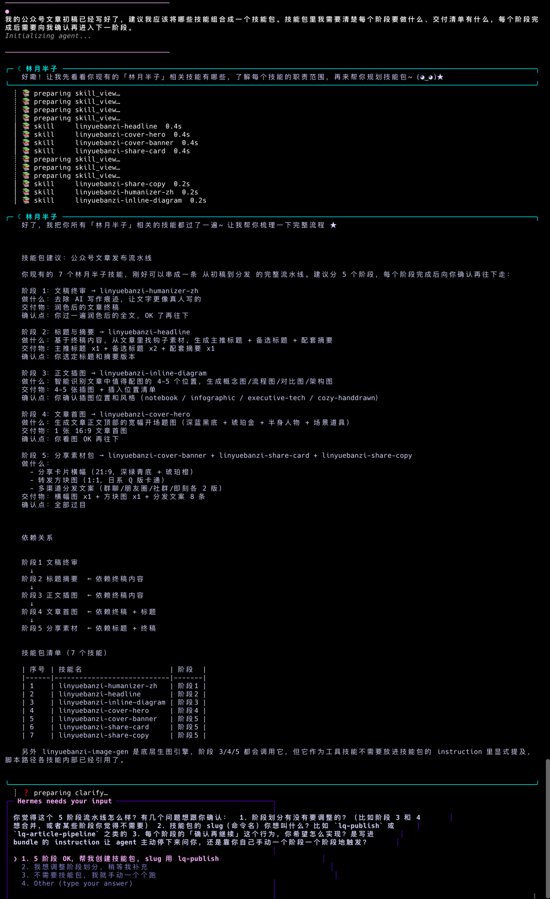
它自己扫了一遍我所有的 Skill，然后按照公众号发文从初稿到分发的完整流程，建议分成 5 个阶段：
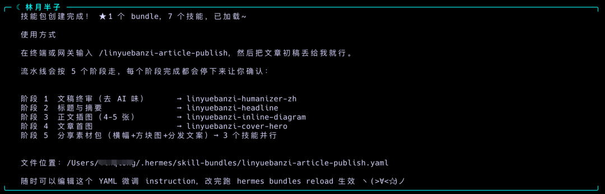
每个阶段都标清了做什么、交付什么、确认什么才能往下走。最后它建议把 7 个核心技能打包成一个综合 Bundle。
这个规划比我自己拍脑袋想的还合理。
现在我写好文章初稿，只需要敲一个命令：
/linyuebanzi-article-publish7 个 Skill 全部到位，按五个阶段顺序推进，每个阶段做完会停下来跟我确认。
从七条命令变成一条命令，五个阶段，全自动。
跑起来是什么样？直接看实际效果。
敲完命令，Hermes 自动进入阶段 1，读取文章、加载去 AI 味的 reference 文件、开始改写。跑完之后列出改了哪些地方，然后停下来等我确认。
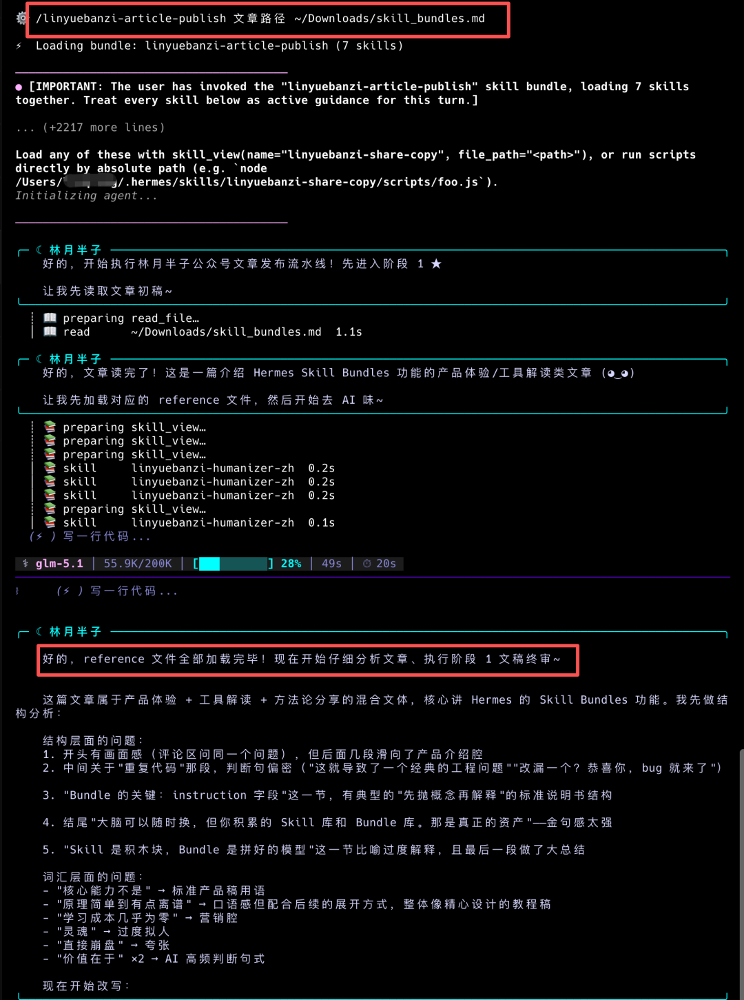
进入阶段 3 正文插图，它先问我要哪种风格。
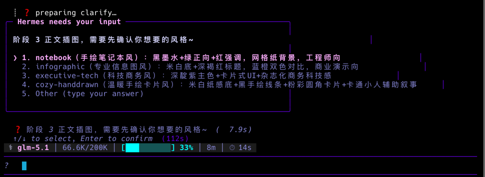
选完之后自动分析文章，挑出 5 个建议插图的位置，每个都标清了类型、图名和要表达什么。
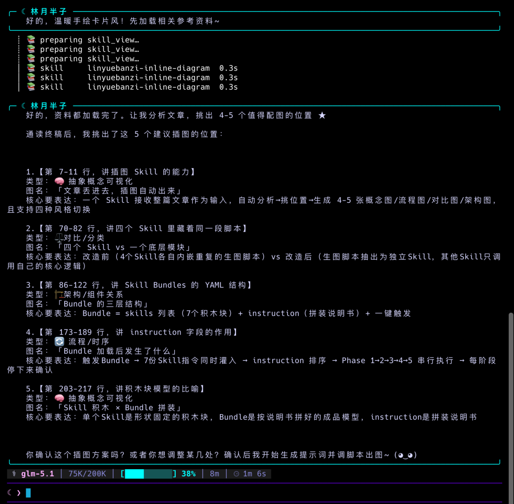
确认方案后开始生图，完成后交付 5 张图 + 提示词文件 + 插入位置清单。
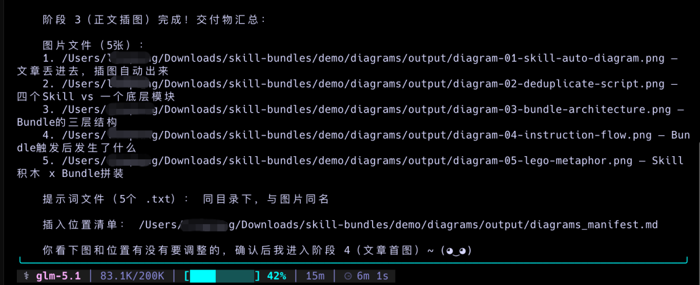
阶段 5 分享素材包，三个子任务并行执行——横幅、方块图、分发文案同时开跑。
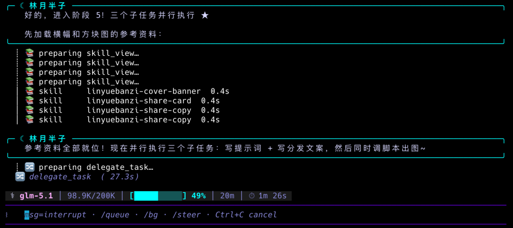
全部跑完，Hermes 自动汇总所有交付物——终稿、标题、5 张插图、首图、横幅、方块图、8 条分发文案，一张清单全列出来。
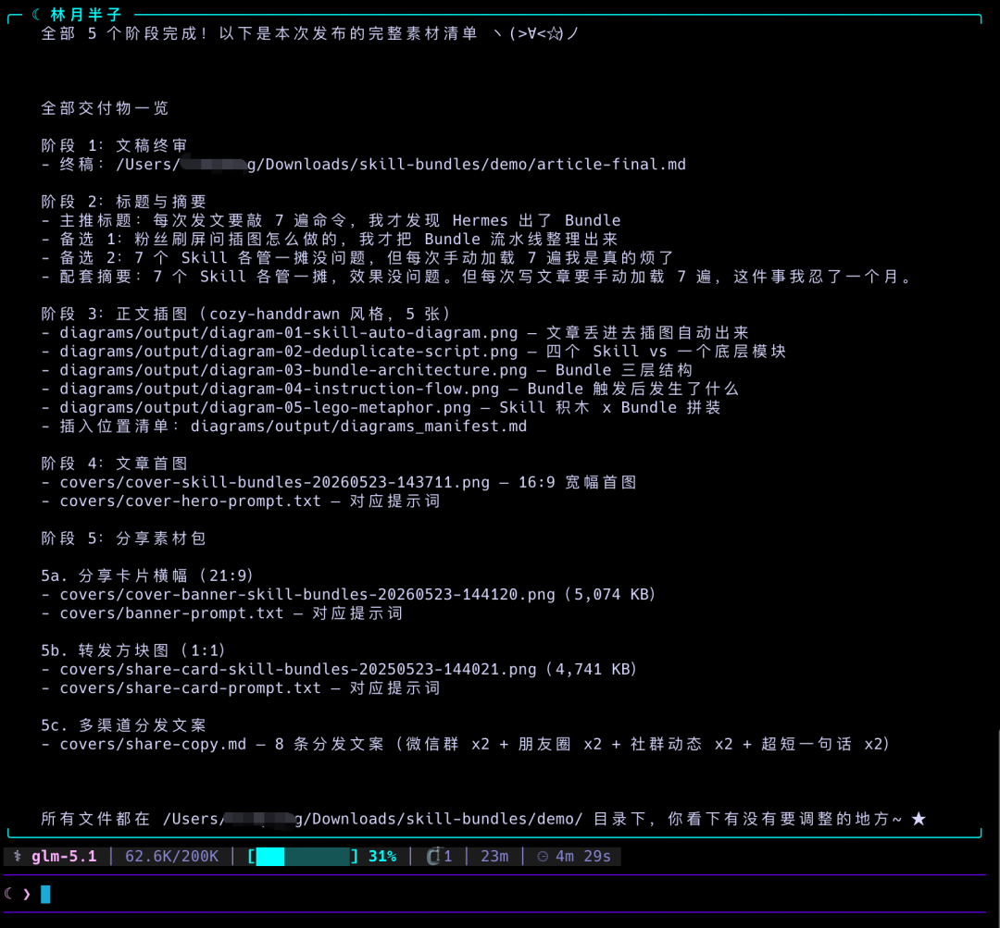
整个流水线跑下来，每个阶段都在等我确认才往下走，不会失控。
Bundle 的关键：instruction 字段
你可能注意到了，YAML 里除了 skills 列表，还有一个 instruction 字段。
这个字段才是 Bundle 的灵魂。
Bundle 的加载机制是这样的：触发一个 Bundle，所有 Skill 的指令会一次性灌进同一条消息里。Hermes 同时拿到了七份"说明书"，加上你在斜杠命令后面打的文字。
如果你不给它一个执行顺序，七个 Skill 的指令同时开火，互相冲突，Agent 不知道先干哪个，输出质量直接崩盘。
所以 instruction 字段的作用就是告诉 Hermes："虽然你现在同时拿到了七个 Skill 的能力，但请按 Phase 1→2→3→4→5 的顺序来，每个阶段做完先等我说 OK 再继续。"
这玩意其实有点像一个迷你版的 AGENTS.md。AGENTS.md 定义的是"你是谁、你的整体行为准则是什么"，而 Bundle 的 instruction 定义的是"这次具体任务怎么干、按什么节奏来"。
一个管身份，一个管流程。
只打包有因果关系的 Skill，用 instruction 定义执行节奏。
Bundle ≠ 工具箱
这里要说一个很多人一上来就会踩的坑。
看到 Bundle 就想把常用 Skill 全丢进去。别这么干。
X 上已经有人分享了教训——五个互相没关系的 Skill 打包在一起，Agent 收到五份冲突指令，输出直接漂移。
判断标准就一句话：Bundle 里的 Skill 之间有没有因果关系？前一步的产出是不是下一步的输入？ 有的话打包，没有就各跑各的。
回头看我的写作 Bundle，七个 Skill 就是一条流水线：终稿 → 标题 → 插图 → 首图 → 横幅 + 方块图 + 分发文案。
每一步都依赖前一步的产物。这不是工具箱，这是流水线。
Skill 是积木块，Bundle 是拼好的模型
你可以把整个体系想象成乐高。
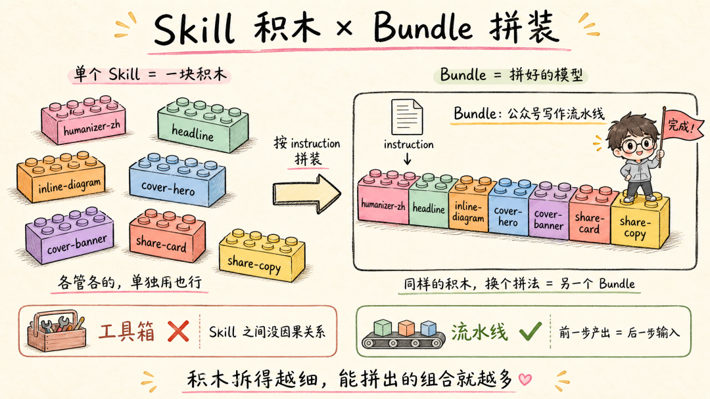
单个 Skill 就是一块积木——形状固定，功能单一。linyuebanzi-headline 只管起标题，linyuebanzi-cover-hero 只管出首图。每块积木各管各的，拿出来单独用也完全没问题。
Bundle 就是你按照说明书把这些积木拼成的一个完整模型。同样的积木块，你可以拼成"公众号文章流水线"，也可以拼成"小某书内容套装"，组合方式不同，产出就不同。
积木块拆得越细、越标准，你能组合出来的玩法就越多。我不应该把生图脚本焊死在每个 Skill 里，而是把它拆成一块独立的积木，哪个模型需要生图就拼上去。哪天想换个生图引擎？换掉这一块就行，其他积木不用动。
instruction 字段就是那张拼装说明书——告诉 Hermes 这些积木按什么顺序拼、先拼哪块后拼哪块。
Bundle 的价值不在于技术多复杂——你也看到了，就一个 YAML 文件。
它的价值在于：把你的行业经验和工作习惯，固化成一个一键可复用的流程。
大脑可以换，技能库跟着你走
最后多说两句。
很多人评价一个 Agent 强不强，第一反应是看它用的什么模型。
但用下来你会发现，模型只是大脑。真正决定一个 Agent 能不能干活的，是它身上挂了多少技能、这些技能之间怎么编排。
Hermes 已经不只是"用人写好的 Skill"了。它有一个机制：当你完成一个超过 5 次工具调用的复杂任务后，Hermes 会自己总结这次的工作流程，主动创建一个新的 Skill 保存下来。下次遇到类似的事情，它直接调用，不用从头摸索。而且每次使用还会自我迭代，越用越顺。
Skill 能自动创建，能自我进化，再加上现在 Bundle 能把多个 Skill 组合成标准工作流——
离 Agent 自己判断"这几个 Skill 经常一起用"然后自动打包成 Bundle，还远吗？
大脑可以随时换。
但你积累的 Skill 库和 Bundle 库，那才是真正跟着你走的东西。